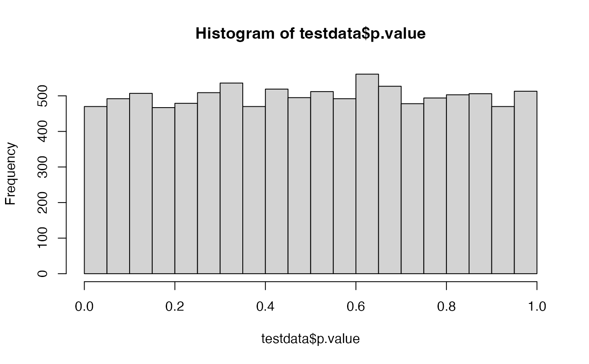
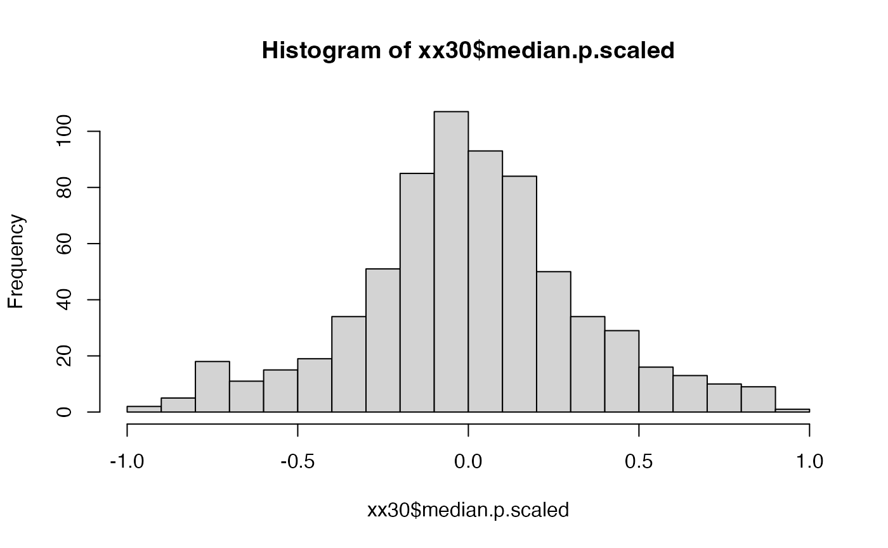
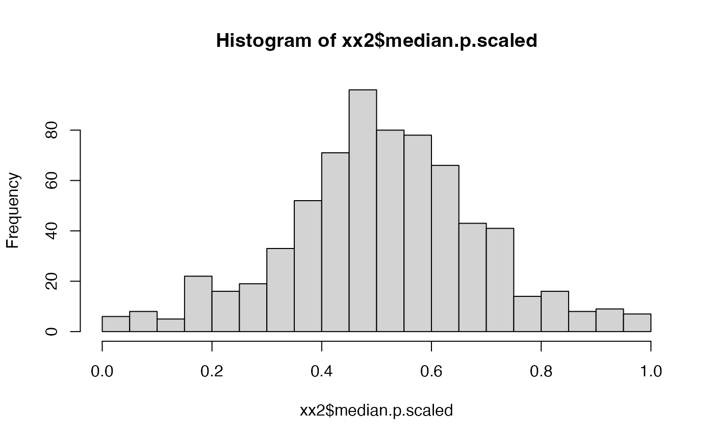
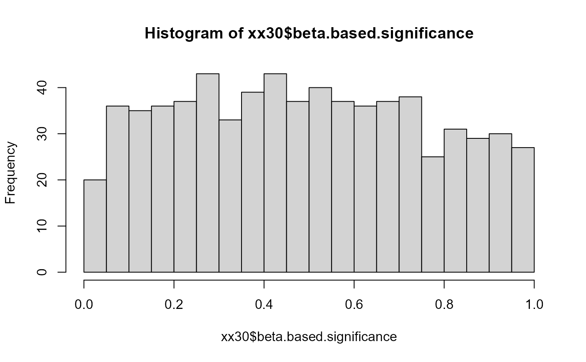
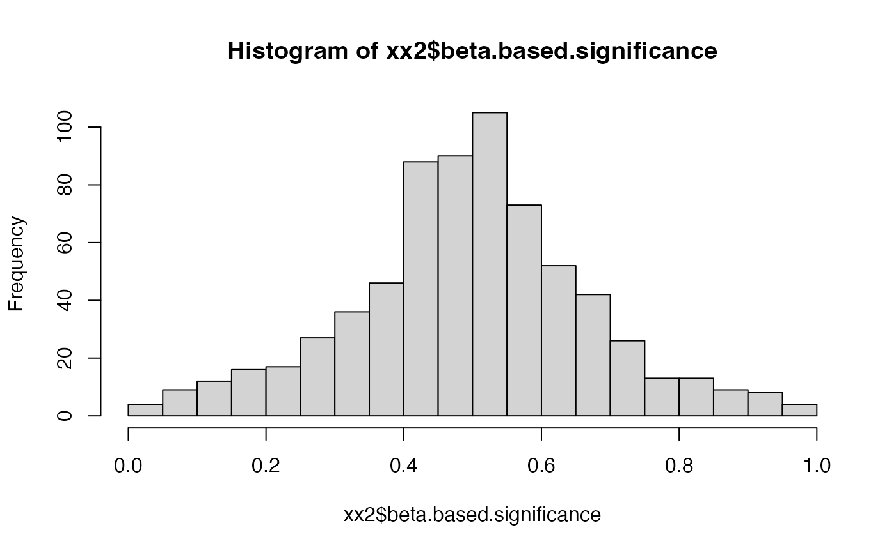
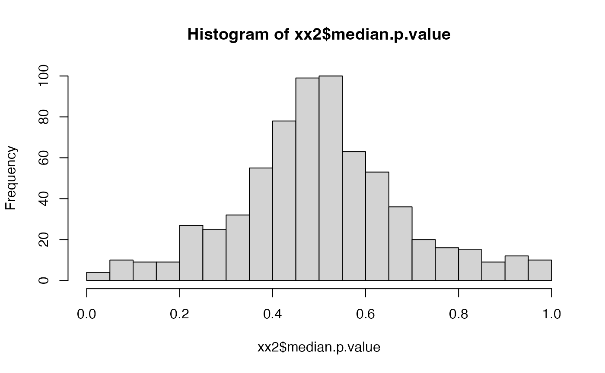
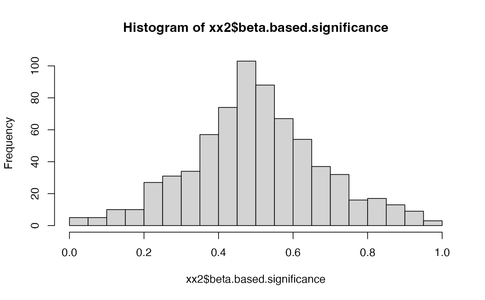

compute protein level fold changes and p.values (using beta distribution) takes p-value of the scaled p-value
Source:R/tidyMS_R6_Modelling.R
summary_ROPECA_median_p.scaled.Rdcompute protein level fold changes and p.values (using beta distribution) takes p-value of the scaled p-value
summary_ROPECA_median_p.scaled(
contrasts_data,
contrast = "contrast",
subject_Id = "protein_Id",
estimate = "diff",
statistic = "statistic",
p.value = "moderated.p.value",
max.n = 10
)Arguments
- max.n
used to limit the number of peptides in probablity computation.
Value
data.frame with columns
See also
Other modelling:
ContrastsModerated,
ContrastsROPECA,
ContrastsSaintExpress,
ContrastsSimpleImpute,
ContrastsTable,
Contrasts_Plotter,
Contrasts_proDA,
Contrasts,
INTERNAL_FUNCTIONS_BY_FAMILY,
LR_test(),
Model,
addContrastResults(),
build_model(),
get_complete_model_fit(),
get_imputed_contrasts(),
get_model_coefficients(),
get_p_values_pbeta(),
isSingular_lm(),
linfct_all_possible_contrasts(),
linfct_factors_contrasts(),
linfct_from_model(),
linfct_matrix_contrasts(),
modelSummary(),
model_analyse(),
moderated_p_limma_long(),
moderated_p_limma(),
my_contest(),
my_contrast_V1(),
my_contrast_V2(),
my_contrast(),
my_glht(),
pivot_model_contrasts_2_Wide(),
plot_lmer_model_and_data_TWO(),
plot_lmer_model_and_data(),
plot_lmer_peptide_noRandom_TWO(),
plot_lmer_peptide_noRandom(),
plot_lmer_peptide_predictions(),
plot_lmer_predicted_interactions(),
strategy_lmer()
Examples
nrPep <- 10000
nrProtein <- 800
p.value <- runif(nrPep)
estimate <- runif(nrPep)
avgAbd <- runif(nrPep)
protein_Id <- sample(1:800, size = nrPep,
replace = TRUE, prob = dexp(seq(0,5,length = 800)))
plot(table(table(protein_Id)))
testdata <- data.frame(contrast = "contrast1",
protein_Id = protein_Id,
estimate = estimate,
pseudo_estimate = estimate,
p.value = p.value,
avgAbd = avgAbd )
xx30 <- summary_ROPECA_median_p.scaled(testdata,
subject_Id = "protein_Id",
estimate = "estimate",
p.value = "p.value",
max.n = 30)
xx2 <- summary_ROPECA_median_p.scaled(testdata,
subject_Id = "protein_Id",
estimate = "estimate",
p.value = "p.value",
max.n = 1)
mad(xx2$estimate, na.rm=TRUE)
#> [1] 0.1596968
hist(testdata$p.value)

hist(xx30$median.p.scaled, breaks = 20)

hist(xx2$median.p.scaled, breaks = 20)

hist(xx30$beta.based.significance, breaks = 20)

hist(xx2$beta.based.significance, breaks = 20)

hist(xx2$median.p.value, breaks = 20)

hist(xx2$beta.based.significance, breaks = 20)

hist(xx2$mad.estimate)